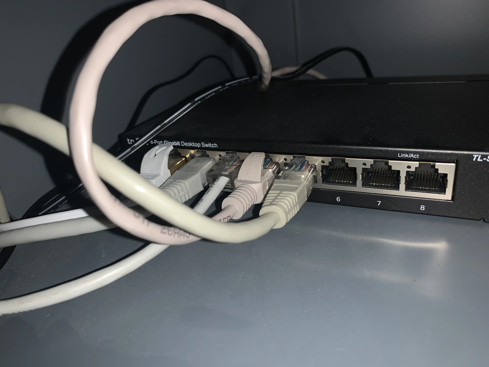
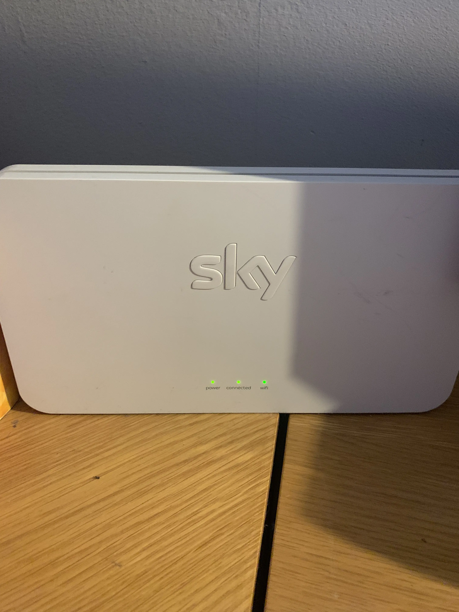
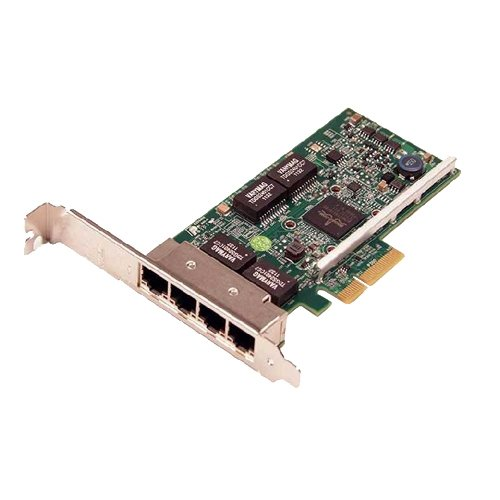

1.3 - Computer networks, connections and protocols (Part 1)
I already knew most of this, so it was mostly built directly following the spec.Network Pros/Cons
- Networks are crucial to our modern use of computers, as the
largest network we have is the internet.
- They come with quite a lot of pros, for example users can share
resources (like printers and storage servers), access their
files from anywhere on the network, stay in touch through calls and
emails, store files in central databases,
and back up their computers, but they also have cons.
- There are security risks with networks, since things like viruses
are most commonly distributed through them, and malware can take
over networks if not properly secured.
- Network traffic can also be intercepted, meaning a layer of
encryption (SSL) is required for sensitive information.
- Servers and network switches are single point of failure,
so your entire network can become useless if just one thing fails,
and lots of users and data can slow everything down and
make the experience of using the network worse.
Types of Networks
- Networks are split into two categories, LANs (Local Area Networks) and WANs (Wide Area Networks).
LANs
- Local Area Networks are networks which are defined has having
a small geographical area of under 1 mile, and all of the hardware
is owned by the person/group of people using it.
- LANs use 'twister pair' (UTP, Ethernet) cables, fibre optical cables,
or Wi-Fi.
- Wide Area Networks have a large geographical area of over 1 mile.
- They are a collection of LANs joined together.
- The largest WAN is the internet.
- To connect to a WAN, you have to use a router.
- Not all the hardware used is owned by the person using it.
For example, your traffic will have to go through your ISP
(Internet Service Provider) at some point.
- WANs use fibre optic cables, satellites and telephone lines.
Network Performance
Network performance is affected by the bandwidth available, the number of users on the network, the latency of connection between computers, the error rate of signals, and the medium (think: type of cable, Wi-Fi) of transmission.
BandwidthBandwidth is the maximum amount of data that cant be sent and received at one time. It is measured in bits per second (bit rate) and a smaller bandwidth means less data can be sent (a slower network), and a higher bandwidth means that more data can be sent, resulting in a faster experience.
Number of UsersA higher number of users (users on a network at the same time) can lead to slowdown if the servers managing the network (like a router) cannot cope with the load or if there is not enough bandwidth for everyone.
Latency
Latency is the delay between data being sent and received,
usually measured in milliseconds (ms). If there is high
latency, more data will be on the network at once so
more data will be on the network, causing collisions.
This can lead to even more data being sent as the error
rate (how many packets of data do not reach their
destination) will increase. Error rate may also increase
on less reliable connections.
The experience is also worsened since the data takes more
time to arrive.
Transmission media is the type of cable used for wired connections, which are higher bandwidth and generally more stable than wireless. The main options for wires are the unshielded twisted-pair (copper or some other metal) cable (usually Ethernet) and fibre-optic cables. Fibre-optic cables have a higher bandwidth than copper cables, and faster transfer rates (2/3 the speed of light).
Network Models
- A network model is the logical structure of the network.
- It defines how the network digitally, will operate on top of the physical network.
Client-Server Models
- A client-server model is where there is a distinct client and a distinct
server on a network, and these connect via a network switch.
- The server is the device which often has a single purpose, like
managing internet access, serving files, controlling security,
managing a smart home, or providing a remote hub for updates.
- A server is sometimes more powerful than the clients, as
they often serve many many different client machines (think
about how many requests a web server has to deal with, for
example.)
- Servers may require specific hardware (like many CPU cores
to run many virtual machines), and specific software (like
the nginx ('engine x') web server software.)
- Most organisations will use a client-server model, as files
and permissions are easier to manage, and the org can more
easily upgrade things all at once.
- Servers can often be expensive however, require specialist
knowledge to operate, and act as single points of failure.
- It is important to note that while a server will often have
specialised hardware, it describes a role, not
inherently a whole 'nother type of computer.
Peer to Peer (P2P) Model
- In a peer-to-peer model, every computer on a network is
equivalent to any other.
- Each peer is responsible for their own management, with
no central server to manage services collectively.
- Most homes have a P2P model, as
most
people do not need or want to run services centrally, or
do not have the prerequisite knowledge or funds.
- P2P models are very easy to setup, maintain, are cheap,
and no specialist knowledge is required.
- However, P2P networks can compromise security and reliability.
LAN Hardware
- In order to run a LAN, the network has specific
equipment to run.
- The hardware used are routers, network switches,
wireless access points (WAPs), network interface cards (NICs)
and transmission media (like Ethernet cables).
Routers
- A router routes (hence the name) packets (chunks)
of data between different networks.
- Most routers will be used for connecting a LAN to the
internet or some other WAN.
- Routers manage data traffic and can even prioritise
"more important" traffic to keep connections stable.
- The router assigns internal IP addresses to devices on a
network, and IPv4 addresses will start with specific numbers
reserved for internal use (like 192.168.x.x or 10.x.x.x).

Network Switches
- Network switches allow multiple devices to communicate on one
LAN.
- The network switches ports are where devices plug in to the
LAN.
- A switch is an active (powered) device, and it inspects
network data and ensures it gets directed to the correct
destination device.
- A Switch can contain software to allow for system administrators to
configure the switch in a particular way or make sure that
everything is running smoothly, among other things. This is
typically only found in enterprise environments.

Wireless Access Points
- Wireless access points (WAPs) allow devices to connected to
a LAN wirelessly, typically over WiFI (technically known as
IEEE 802.11, although I strongly doubt you need to know that
for exams).
- The access point connects to a switch or directly to a router
via an Ethernet cable, although some can also connect to
other wireless routers.
- The range of the access point is limited, so multiple APs will
be needed if serving a larger area than what one AP can cover.

Network Interface Cards
- A NIC (just pronounce it 'nick' like everyone else does) is
used for a computer to connect to networks.
- A NIC may support both wired and wireless connectivity, and
allows a computer to send a receive data.
- Most motherboards have NICs built in, so modern systems
do not need a separate card installed for networking in most
cases.

Transmission Media
- Transmission media is the physical wired method of connection
to a network.
- There are three types of transmission media:
Unshielded Twisted Pair (UTP), Fibre Optic and Coaxial (Copper).
Unshielded Twisted Pair
- UTP cables are made up of separately insulated pairs of
copper wires twisted around each other.
- They are low bandwidth but are the most affordable type of cable
and are commonly found in LANs (the 'Ethernet' cables in the
network switch picture are a type of UTP cable).
Fibre Optic Cables
- Fibre optic cables are made of glass and are high-bandwidth and
low-latency (data can travel at up to 2/3 the speed of light!).
- They are the most expensive type of cable, and are commonly
used for high-volume transmission and long-distance connections.
- Fibre optic cables are unaffected by electrical noise (interference)
as they contain no metal to induce magnetic currents in (how interference
is caused).
- (sidenote: here's
a map of all the undersea fibre-optic cables that are in use today.)
Coaxial (Coax) Cables
- A coax cable has a medium bandwidth (between UTP and fibre) and
are more expensive than UTP, but less than fibre.
- Coax is used to connect large-scale networks, like PSTN (Public
Switched Telephone Network, at least until it's shut down in 2025)
and TVs.
The Internet
(ok so this is the sh*t I specialise in so I'll try to not overcomplicate things but that may be difficult...)
- The Internet is a massive collection of networks
spanning the whole world.
- (this website is accessible via the internet ok i don't think
you need to be told how widespread it is)
- The Internet is the connectivity provider and is not the
same as the World Wide Web. It's really just a giant WAN with extra steps.
- You connect to the Internet at home via your router. Your router
contains a modem, which is what allows you to connect to your ISP
(Internet Service Provider, like Sky or BT)'s network, via
telephone line or fibre.
-
(this is the point in the savemyexams page when i started
complaining to myself about the oversimplifications)
- Your ISPs network is connected to other networks, which are connected
to other networks, and so on until you have the whole Internet.
- This all results in loads of routers all connected together, which
allows you to access other LANs, which will then contain other computers,
including servers (this site runs on a server, one of Cloudflare's).
Domain Name System
- When you type something like 'aqasbasement.uk' into your browser,
the computer has to look up the IP (Internet Protocol) address of
a server in order to retrieve the content at that location.
- The service it uses to do this is called the Domain Name System,
or DNS.
- The DNS is (simplifying) a directory of domain names and their
associated IP addresses, so you can have a nice human-readable domain
name and don't have to type in '172.66.45.28' into your browser (or,
worse (screw IPv6 readability): [2001:4860:4860::8844]
for 'deb.debian.org'.)
- An entry into the directory is called a 'record'.
- If DNS didn't exist, you'd have to remember the IP address of every
website you want to visit (or at least a search engine's one).
- Here is what the DNS records for this website (aqasbasement.uk) look like,
for GCSEs you don't need to worry about the different types or what 'proxied'
means, but 'A' means direct to IP, and 'CNAME' means a domain
name that is pointing to another one, which can keep happening until eventually
an A record is reached and the IP can be resolved.

How does DNS work, then?
1. When you type in a URL (Uniform Resource Locator) to your browser, your computer
requests the IP address from the DNS server configured in your PC, program or router
(for example 1.1.1.1 (Cloudflare), or 9.9.9.9 (Quad9) but most commonly your ISP's
servers unless overridden manually).
2. As the DNS resolver caches frequently made requests, most URLs will
not need to get past this stage. If they do, it moves on to the next step:
3. DNS root servers. The DNS resolver queries the DNS root server for the
request. The root server's job is to direct the resolver up the chain to the TLD
(Top-Level Domain, like .uk or .net) server.
4. The TLD server (managed by a company or organisation like
Nominet UK (for .uk, .co.uk, .org.uk and the like)).
provides the resolver with the correct IP address for its request.
5. The DNS resolver passes its answer onto you, and caches the answer in case it
comes up again soon.
6. Your computer will now do whatever it needs to with the IP address, such as
request a website resource (explained below).
Web Servers + Clients
Web Servers
- A 'Web Server' describes a computer that's role is to store web pages and other assets
needed for a website to function.
- They normally have a static IP address, to avoid having to constantly change DNS records.
- The most common web server softwares you will find are nginx and Apache. They mostly
deal with hosting websites, administering redirects and other client requests.
Client
- A 'client' describes a computer that's role is to send requests to the server.
Your computer is acting as a client to the web server behind aqasbasement.uk.
- When you (loading???) make a request to 'aqasbasement.uk',
your query first goes through DNS (returning something like 104.21.29.121 (don't try that)).
- Your computer then makes a GET request to the server, which returns the resource.
- The server also returns a status code, which in most cases should be 200 (view
them all at http.cat).
The Cloud
- The 'Cloud' is (essentially) just 'someone else's computer'.
- Cloud servers are used to store data, run programs and do all sorts of things
over the internet.
| Advantages of Using the Cloud | Disadvantages of Using the Cloud |
|---|---|
| Access your files from anywhere with an internet connection. | Requires a reliable internet connection to access files. |
| Automatic backups help prevent data loss. | Potential security risks if data is not properly protected. |
| Scalable storage options—you can easily add more space. | Ongoing costs—usually requires a subscription or payment. |
| Collaboration is easier as multiple people can work on the same document simultaneously. | Privacy concerns—your data is stored on someone else's servers. |
| Reduces the need for physical storage devices like USB drives. | Data could be inaccessible if the cloud service provider has an outage. |